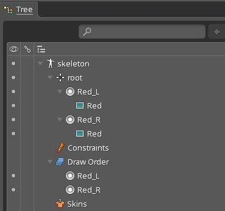
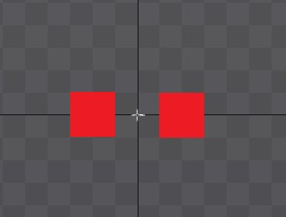
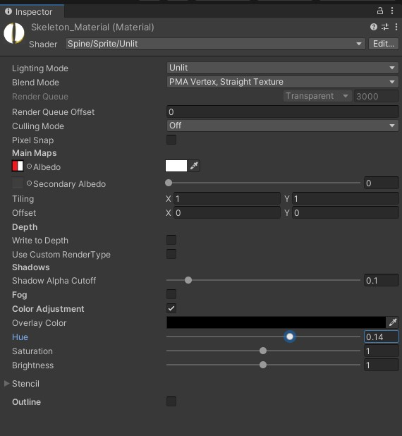
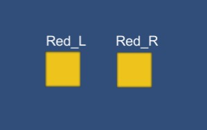
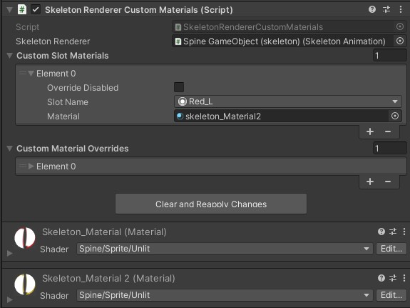
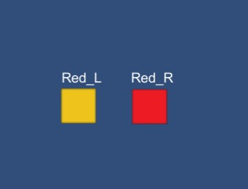
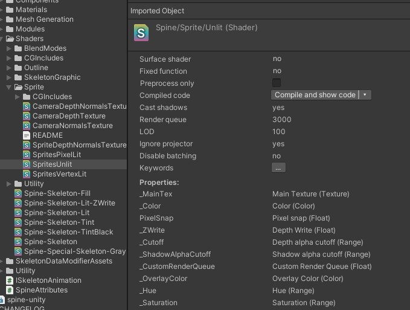

UnityでSpineのslotのマテリアルを変更する
概要
Unityで読み込んだSpineで作ったモデルの特定のスロットだけマテリアルを変えたいケースがあります。
例えば、帽子の色の色相を変えたいとか、髪の毛のコントラストを変えたいなどです。
その方法について調べたので今回まとめました。
まず、今回使用するサンプルのSpineのツリーとモデルを以下に示します。


単純に赤色の四角を2つ用意し、今回はマテリアルを変更する例として片方の色相を変えることを目指します。
色相を変えるには
まず、Unityにインポートしたモデル全体の色相を変える方法を示します。
インポートした際に生成されるマテリアルのShaderをSpine/Sprite/のShaderに変えます。
ライティングの有無により違いますが今回はUnlitを使用しました。
このShaderにはColorAdjustmentの項目があり、これをチェックするとHueの値を変更できます。

上図のようにHueを0.14にすると下記のように色が変更されます。

Slotの色相を変える-方法1
Slotの色相を変える方法は2つあり、その1つがSkeletonRendererCustomMaterialsを使用する方法です。
このコンポーネントをアタッチし、変更したいSlotに別途用意した色相を変更済みのマテリアルを設定するだけで変更可能です。

上図のようにRed_Lに別途用意したマテリアルを設定すると下図のように片方だけ変わります。

Slotの色相を変える-方法2
上記方法ではなく、プログラムから色相を変えたいケースがあります。
上記のSkeletonRendererCustomMaterialsはドキュメントにあるようにプログラムから使用するものではないようです。
プログラムから変更したい場合はSkeletonRenderer.CustomSlotMaterialsを使用するようです。
以下に、CustomSlotMaterialsを用いて色相を変更するプログラムを載せます。
using Spine.Unity;
using UnityEngine;
public class ChangeHue : MonoBehaviour {
public float hue = 0.14f;
void Start() {
var skeletonRenderer = GetComponent<SkeletonRenderer>();
var SkeletonAnimation = GetComponent<SkeletonAnimation>();
var slot = SkeletonAnimation.Skeleton.FindSlot("Red_L"); //Red_Lスロットを探す
Material m = new Material(GetComponent<MeshRenderer>().material); //現在使用しているMaterialを元に新しいMaterialを生成する
m.SetFloat("_Hue", hue);
skeletonRenderer.CustomSlotMaterials[slot] = m;
}
}
Shaderのパラメータの_Hueというパラメータ名はShaderのファイルを選択すると、インスペクタに表示されます。

まとめ
今回はスロットのMaterialを変える例として色相を変更しましたが、他の要素を変えるのも要領は同じです。
2通りの方法、どちらもコンポーネントをアタッチしたモデルのみマテリアルの変更が反映されます。
使用バージョン
Unity 2020.3.11
Spine 4.0.24